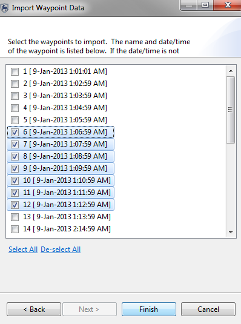
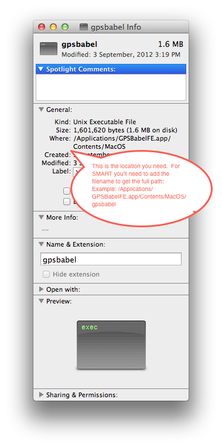
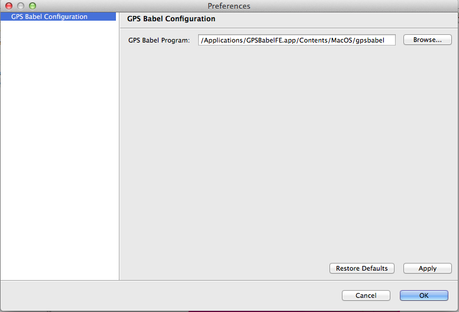

Seleccionando con tecla de mayúsculas y barra espaciadora
En muchas partes de la aplicación de SMART, cuando muchos objetos (atributos, puntos de patrullaje, etc ..) están activados o desactivados, el usuario puede alternar entre ellos individualmente, a través de la función "Seleccione todos/De-seleccione todos," o a través de otra opción.
Usando la tecla de mayúsculas y seleccionando un bloque de registros, se puede oprimir la barra espaciadora, para activar o desactivar los registros seleccionados.

P. ¿Cuando se añade una cuadrícula a la perspectiva de mapeo, muchas veces no lo dibuja correctamente, lo que resulta en una X roja en la capa de retícula en la lista Capas. ¿Cómo puedo hacer para que se muestre la capa cuadriculada?
R. Las cuadriculas sólo son compatible cuando la unidad de CRS es "metro" en todos los ejes.
Para especificar la proyección de la cuadrícula:
1. Abra la capa de estilo cuadriculada (haz clic derecho sobre la capa y elige 'Cambiar Estilos" o seleccione la capa y utilize el botón de revisión de estilo).
2. Elige página "Proyección" en la lista a la izquierda.
3. Seleccione una proyección con "metro" en todos los ejes.
4. Aplique
P. ¿Por qué no funciona la función de editor de estilo de tema en los informes?
R. Este es un problema fundamental con la forma en la que el estilizador de tema funciona. Este construye temas basados en los datos dentro de la capa. Sin embargo, al establecer el informe todavía no hay datos en la capa, por lo tanto, el error. Los datos de consulta no se generan hasta que se ejecute el informe y las fechas son proveídas.
Si quiere estilos temáticos en el informe, la forma de trabajar alrededor de este problema, es la siguiente:
1. Ejecuta la consulta dentro de la perspectiva de consulta y establece el estilo de tematización usando el editor de estilo asociado a la capa de consulta.
2. Cuando el estilo de tematización se configura a la forma que desee, abra el dialogo de estilo para la capa y seleccione la página 'XML' en la lista a la izquierda.
3. Copie el fragmento de código XML mostrado.
4. Regrese a editar su informe.
5. Cambie el estilo de la capa de mapa en el informe al cual desea aplicar la tematización, y pegue el código XML copiado en la página "XML" de este diálogo de estilo.
6. Guarde.
7. Vuelva a ejecutar el informe y los datos se ajustarán a su estilo temático.
P. ¿Por qué SMART toma mucho tiempo en cargar las áreas de conservación? No parece que esté haciendo algo.
R. Cuando la aplicación SMART se apaga anormalemente (apagando el equipo, un fallo de computadora, etc) la base de datos de SMART realiza una validación la próxima vez que se ejecute. Esta validación puede tardar un tiempo y se realiza cuando se inicia el sistema. Para evitar esto, asegúrese de apagar el programa de la manera correcta cuando haya terminado con él.
P. ¿Por qué mi consulta falla al cargar con un "no se pudo analizar búsqueda: <Nombre de búsqueda>" error?
R. Este es un resultado de los filtros de área o modelo de datos que han cambiado sin que se actualice la consulta. Se tendrá que volver a crear la consulta.
Hay dos situaciones conocidas donde esto ocurre:
1. Si se eliminan o cambian las claves en el modelo de datos. En este caso, las consultas no son validadas (y las observaciones de patrullaje sí lo están) por lo que este error ocurre.
2. Si la clave de filtro de área cambia. De igual manera, las búsquedas no están validadas cuando las áreas se modifican o actualizan.
P. ¿Por qué la importación de puntos de GPS a una patrulla de varios tramos a veces coloca los puntos en el tramo equivocado?
R. Si dos tramos tienen el mismo rango de tiempo, SMART no sabe a cual tramo asignar los puntos y escogerá uno de los tramos. Verificar la asignación correcta de los puntos es muy recomendable cuando se importa a un patrullaje de varios tramos. Si la asignación de los puntos es incorrecta, el usuario puede moverlos a otro tramo.
P. Al utilizar SMART, veo funciones en el diálogo de Exportación de Mapa o cuando hago clic sobre las capas del mapa veo esas funciones, pero no parecen hacer nada. ¿Por qué es están aquí?
R. Si ve opciones adicionales en el diálogo de Exportación de Mapa u otras opciones en el menú del botón derecho de tu capa, puede que este experimentando problemas con las opciones de configuración de SMART. Pruebe ejecutar "smart.exe-clean" para reparar y eliminar las funciones no utilizadas.
P. ¿Si tengo demasiadas columnas en mi búsqueda (y quiero tener estas columnas), puedo diseñar mi informe en formato de paisaje?
R. Sí. Ver la imagen abajo.

P. ¿La versión actual muestra 15 dígitos después del decimal para distancia cubierta y número de horas ...Yo preferiría tener sólo dos dígitos después del decimal. ¿Es posible hacer esto en el sistema SMART o se necesita cambios en la programación?
R. No se puede hacer esto en la tabla de resumen. Sin embargo, si usted utiliza su resumen en un informe, la interfaz de informes le permite definir cómo formatear el número para visualización.
P. ¿Es posible copiar la página principal y utilizar el mismo formato para un nuevo informe?
R. Utilice la opción "Exportar a biblioteca" asociada con la página principal:
Luego, en su segundo informe:
Esto agregará la página principal a su segundo informe (ver imagen adjunta). Como regla general, los elementos que desea compartir a través de informes deben ir a la biblioteca.
P. ¿Qué es Identificación del elemento en la sección de informes?
R. Un identificador utilizado por BIRT en el diseño del informe. No debería ser necesario modificarlo.
P. ¿Puede explicar qué son los cubos de datos?
R. SMART utiliza BIRT para diseñar y ejecutar informes; cubos de datos son una característica de BIRT - echar un vistazo a la documentación de BIRT dentro de la sección "2013-05-29"
P. En la versión actual se puede seleccionar un solo tipo de meta (Numérico / espacial / Administrativo) para cada equipo de patrullaje / estación / zona de conservación. ¿Cómo puedo configurar objetivos tanto numéricos y espaciales para un solo plan de patrullaje?
A. Un plan puede tener múltiples metas. Así que para crear objetivos tantos númericos como espaciales, necesita crear dos metas en dos operaciones separadas. En primer lugar, crea tu objetivo numérico y oprime "Guardar". A continuación, utilice el botón "Añadir Meta" (Añade Meta) para añadir otro objetivo, esta vez eligiendo un destino espacial.
P. ¿Qué significa "CET" en el campo de fuente de inteligencia?
R. C ommunity E xtension T eam (Equipo de Extensión a la Comunidad)- o sea un equipo separado del Departamento Forestal/ONG que trabaja con las comunidades locales que pueden ser una fuente vital de inteligencia.
P. ¿Cómo puedo instalar GPS Babel en una Mac?
R. GPS Babel no viene incluido en el paquete de instalación de SMART para Mac. Para activar GPS Babel en la Mac y permitir que los usuarios importen datos directamente desde las aplicaciones de GPS, es necesario seguir las instrucciones a continuación.
1. Descargar e instalar GPS Babel directamente desde el sitio Babel GPS. ( http://www.gpsbabel.org/download.html )
2. Determinar la ruta completa al ejecutable Babel GPS. Este NO es la aplicación de GPS Babel que se ve en la sección Aplicaciones del Finder. Usted debe entrar al paquete y buscar el archivo ejecutable gpsbabel.
Generalmente, este archivo se encuentra en: / Aplicaciones / GPSBabelFE.app / Contents / MacOS / gpsbabel.
a) En el Finder, haga clic en "Aplicaciones".
b) Encuentre la aplicación GPS Babel.
c) Haga clic a la misma vez que oprimir "Ctrl-" y elige "Mostrar contenido del paquete"
d) Examine las carpetas y busque el archivo de aplicación gpsbabel. Usted debe encontrar esto en Contents / MacOS /.
e) Crtl-> Click sobre gpsbabel y escoge 'Get Info'.
f) En la sección "General", verá un enlace 'Donde:'. Esta es la carpeta que tendrá que adjuntar con gpsbabel y utilizar en el paso 6.

3. Ejecuta SMART y cree o importe un área de conservación (o restaure una copia de seguridad) e inicie sesión en el sistema.
4. Abra el árticulo de menú "Archivo -> Preferencias del Sistema".
5. Elija la página "GPS Babel Configuración".
6. Apunte el Programa Babel GPS en el lugar que se encontró en el paso 2.

Si configurado apropiadamente, en este punto usted debería ser capaz de importar puntos y trayectos directamente desde las unidades de GPS.